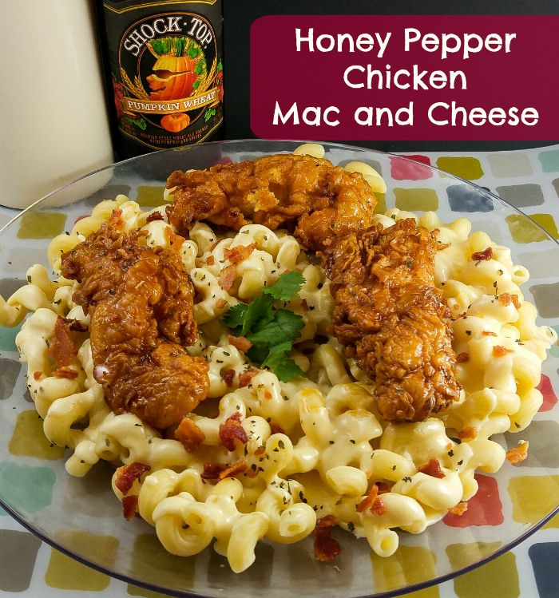

Honey Pepper Chicken with Mac and Cheese

Description
copy cat Applebees Honey Pepper Chicken with Mac and Cheese.
Ingredients
- Macaroni
- Cheddar cheese, American cheese
- Flour
- Milk
- Chicken
- Breadcrumbs
- Buttermilk
- Oil
- Honey
- Soy sauce
- Brown sugar
- Black pepper
- Cayenne pepper
- Garlic powder
- Butter
Steps
- Bake or deep fry chicken strips until done (you can also make your own), set aside.
- Cook pasta according to package directions.
- Meanwhile in medium saucepan mix all your Honey Pepper sauce ingredients and bring to a boil, reduce heat and simmer for about 15 minutes or until thickened, stirring often..
- To make your cheese sauce melt your butter and cream together in medium sauce pan.
- Once melted add your cheese and garlic and stir until combined and reduce heat until all cheeses are blended in.
- Add salt and pepper to taste.
- Add pasta to large bowl and pour sauce and crumbled bacon over top, stir to combine.
- Dip each of your chicken strips into the honey pepper sauce until coated. Set aside.
- When ready to serve, dish up your pasta and top with chicken strips and sprinkle with basil.
back